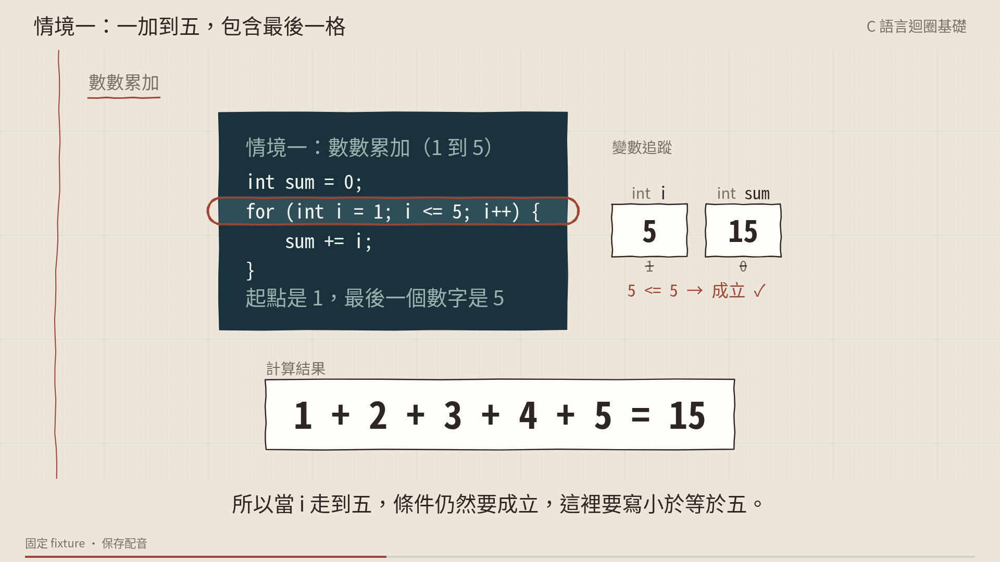
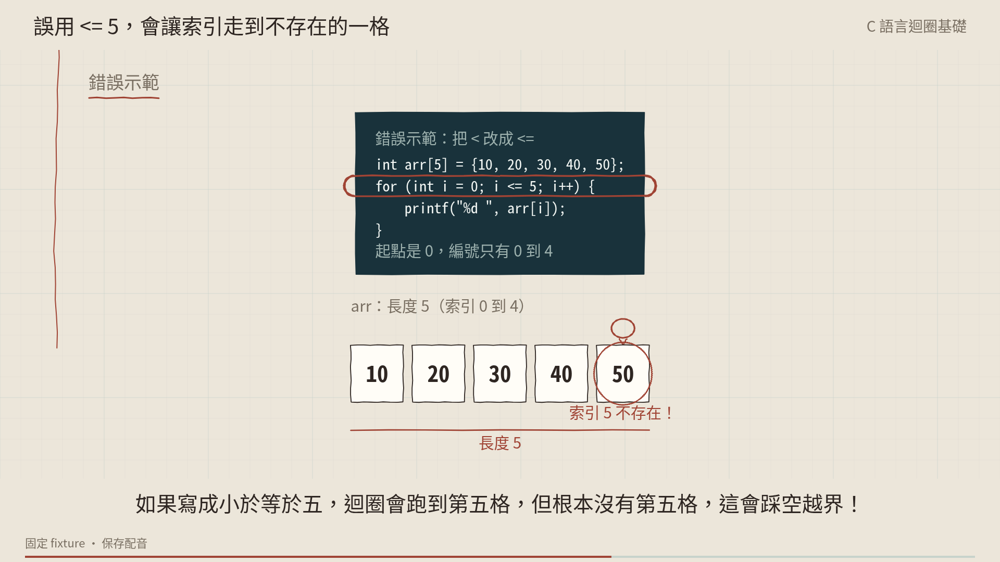
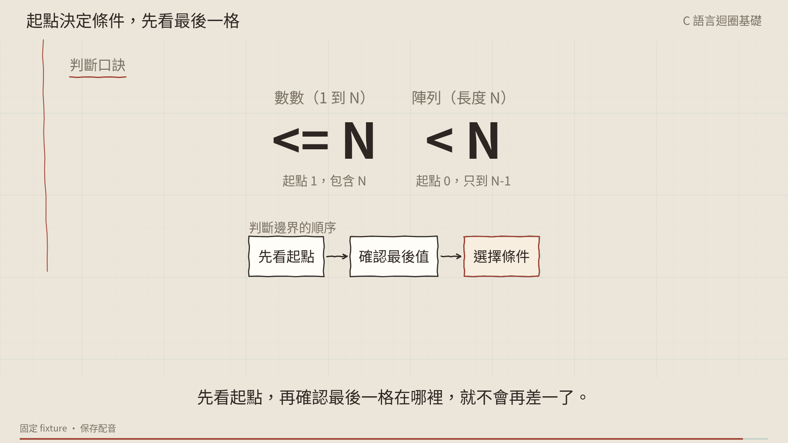

迴圈邊界：四支試片，直接比較
同一份保存旁白。A 與 B 為完整 69.66 秒影片；白板與文字候選使用相同開場的前兩句。這是固定教材與編排的比較樣片，尚未代表 AI 自動選擇或使用者品質驗收。
下載 B 交付音量版（−16.29 LUFS、true peak −1.19 dBTP；畫面相同，另作音量處理）
B 可拖曳 Board 播放器 · 可拖曳外部候選 · 共同教學規劃接點（無聲） · 驗收與來源紀錄



同一份保存旁白。A 與 B 為完整 69.66 秒影片；白板與文字候選使用相同開場的前兩句。這是固定教材與編排的比較樣片，尚未代表 AI 自動選擇或使用者品質驗收。
下載 B 交付音量版（−16.29 LUFS、true peak −1.19 dBTP；畫面相同，另作音量處理）
B 可拖曳 Board 播放器 · 可拖曳外部候選 · 共同教學規劃接點（無聲） · 驗收與來源紀錄


